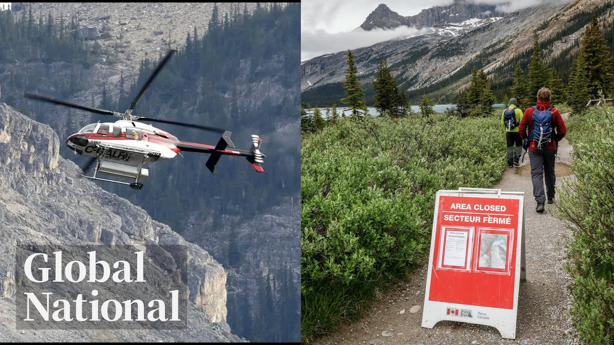

【优质全球新闻节目：Global News｜加拿大公园管理局称班夫岩崩"无法预见或预防"｜温哥华时间2025年6月20日】
Summary: Tragedy strikes Banff National Park as a rockslide kills two hikers, while Middle East tensions escalate with missile strikes and nuclear threats. Canada shows rising support for LGBTQ2+ rights amid global backlash, and domestic tourism gets a boost with the Canada Strong Pass.
摘要： 班夫国家公园发生岩崩悲剧导致两名徒步者遇难，中东局势因导弹袭击和核威胁升级。加拿大在全球对LGBTQ2+权益反弹中支持率上升，并通过"加拿大坚强通行证"刺激国内旅游业。

⏱️ Estimated Reading Time: 33 min
📚 六级生词 📚 雅思生词 📚 托福生词 📚 专八生词 📚 SAT生词 📚 考研生词 📚 GRE生词 📚 高考生词
[Music] On this Friday night, tragedy strikes Banff National Park.
[音乐] 在这个周五夜晚，悲剧袭击了班夫国家公园。
A rock slide kills two people on a popular hiking path as witnesses watch helplessly.
一场岩崩在热门徒步路线上夺走两条生命，目击者只能无助旁观。
The warning to other hikers in the region.
这给该地区的其他徒步者敲响警钟。
Israel's Iron Dome is showing cracks.
以色列的铁穹防御系统开始出现漏洞。
More missile strikes and civilians killed in the Middle East.
中东地区发生更多导弹袭击和平民伤亡。
What Iran is now saying about a possible path to peace.
伊朗对可能的和平路径发表最新声明。
Canadian pride.
加拿大的骄傲。
Opinion polls show sagging support for LGBTQ2 plus rights around the world.
全球民调显示对LGBTQ2+权益的支持正在下滑。
How Canada is bucking the trend.
加拿大如何逆势而行。
Plus, the Canada Strong Pass.
还有"加拿大坚强通行证"计划。
I'm kind of staying away from the States.
我最近有点避开美国。
A new incentive encouraging summer tourists to stay global national.
一项鼓励夏季游客留在国内的新激励措施。
Reporting tonight, Jeff Simple.
今晚由杰夫·辛普尔为您报道。
Good evening and thank you for joining us.
晚上好，感谢您的收看。
The body of a second person has now been recovered at the site of yesterday's rock slide in Banff National Park.
班夫国家公园昨日岩崩现场已找到第二具遇难者遗体。
13 others were injured and police do not believe that anyone else is missing.
另有13人受伤，警方认为没有其他失踪人员。
That huge rock face gave way as hikers scrambled for cover.
当徒步者争相躲避时，巨大的岩壁崩塌了。
The slide happened at Bow Glacier Falls.
这次岩崩发生在弓冰河瀑布附近。
That's about an hour's drive from Banff, Alberta.
距离阿尔伯塔省班夫镇约一小时车程。
The route is popular among hikers, young and old.
这条路线深受各年龄段徒步者的喜爱。
The path begins just off the highway and it takes about four hours to complete.
步道起点紧邻高速公路，全程约需四小时。
Our Jamie Doll is near the trail head.
我们的记者杰米·多尔正在步道起点附近。
Jamie, well, this place is on postcards and bucket lists.
杰米：这里常出现在明信片和人生愿望清单上。
Not only does it have an emerald green lake, but also a glacier and cascading waterfalls.
这里不仅有翡翠般的湖泊，还有冰川和层叠的瀑布。
And the route is accessible for hikers of all abilities.
这条路线适合各种体能水平的徒步者。
It's no surprise why so many people come here.
难怪如此多人慕名而来。
But sadly, this iconic spot will now be known for something other than its striking beauty.
但可悲的是，这个标志性景点如今将因岩崩而非绝美风光被人铭记。
With no warning, a gorgeous sunny day on the mountain turned dark in a cloud of dust and rock.
毫无预警地，山上晴朗的好天气瞬间被尘土和岩石的乌云笼罩。
It was half an amphitheater that's appeared to come down in two sections.
看起来有半个圆形剧场大小的山体分两部分崩塌。
And then as I'm watching it, I realized there were people and that's when I threw the phone in my backpack and ran.
当我目睹时，意识到有人被困，立即把手机塞进背包逃跑。
Experienced hiker Camala Dixon watched in horror as the mountain gave way.
经验丰富的徒步者卡玛拉·迪克森惊恐地看着山体崩塌。
There was a lady um that was passing in and out of consciousness.
有位女士当时意识时断时续。
Um we kept trying to keep her warm.
我们一直试图为她保暖。
People had described that there were people under the rocks.
人们描述有人员被压在岩石下。
The rocks were huge that came down.
坠落的岩石非常巨大。
A ground and air response was dispatched.
地面和空中救援队立即出动。
Rescuers recovered two bodies, one just hours after the slide, the other at dawn on Friday.
救援人员找到两具遗体，一具在岩崩后数小时，另一具在周五黎明时分。
The first victim has been identified as 70-year-old Utah Henriks from Calgary.
首位遇难者确认为来自卡尔加里的70岁老人尤塔·亨里克斯。
friends say she loved to hike and loved these peaks.
朋友们说她热爱徒步和这些山峰。
Two weeks ago, the Alpine Club of Canada released a safety bulletin about rocks slides in the Canadian Rockies after an event in Bugaboo Provincial Park in BC.
两周前，加拿大高山俱乐部就BC省布加波省立公园事件发布关于加拿大落基山脉岩崩的安全公告。
Experts say rapid glacier melt is quickly shifting the stability of the landscape.
专家表示冰川快速融化正迅速改变地形稳定性。
One of the problems mountain ranges are facing everywhere is the loss of mountain permafrost and it's causing mountains to uh fall apart faster.
全球山脉面临的共同问题是永久冻土流失，导致山体加速崩解。
This is an image of Bow Glacier Falls in the summer of 2021.
这是2021年夏季弓冰河瀑布的影像。
And here it is after Wednesday's slide.
这是周三岩崩后的景象。
A massive crown now scarring its face.
巨大的崩落面在山体上留下伤痕。
We're always aware of rockfall.
我们始终警惕岩崩风险。
That's one of the biggest risks in the summertime environment in the Rockies.
这是落基山脉夏季环境中最主要的危险之一。
Most emergency crews have now left this area and the parking lot has reopened.
多数应急人员已撤离，停车场重新开放。
Banff National Park is expected to get a substantial amount of rain this weekend.
班夫国家公园本周末预计将有强降雨。
This tragedy a stark reminder of the unpredictability of the mountains.
这场悲剧残酷提醒着山脉的不可预测性。
Jeff, thanks Jamie.
杰夫：谢谢杰米。
Turning to the Middle East now and another deadly day of missile attacks between Israel and Iran.
现在转向中东，以色列和伊朗又经历致命导弹袭击的一天。
US President Donald Trump, who says he will decide within two weeks whether to join Israel in attacking Iran, said today that he hopes people can come to their senses.
美国总统特朗普表示将在两周内决定是否加入以色列对伊朗的进攻，他今天表示希望人们能恢复理智。
And the president also criticized his own intelligence community over Iran's nuclear plans.
总统还就伊朗核计划批评自己的情报机构。
It looked like I'm right about uh the material that they've gathered already.
看来我对他们已收集材料的判断是正确的。
It's a tremendous amount of material and I think within a matter of weeks or certainly within a matter of months they're going to be able to have a nuclear weapon.
材料数量巨大，我认为几周或几个月内他们就能拥有核武器。
We can't let that happen.
我们绝不能允许这种情况发生。
What intelligence do you have that Iran is building a nuclear weapon?
你们有什么情报证明伊朗正在制造核武器？
Your intelligence community has said they have no evidence that they are at this point.
你们的情报机构表示目前没有证据表明这点。
Well, then my intelligence community is wrong.
那我的情报机构就错了。
Who in the intelligence community said that?
情报机构中谁这么说的？
Your director of national intelligence, Tulsi Gabbard.
你们的国家情报总监图尔西·加巴德。
She's wrong.
她错了。
Trump's rebuke signals growing tension over the high stakes conflict.
特朗普的斥责表明这场高风险冲突的紧张局势升级。
Mike Armstrong begins our coverage in Jerusalem.
迈克·阿姆斯特朗从耶路撒冷开始报道。
Mike, well, Jeff, a couple of things seem to have changed here today.
迈克：杰夫，今天这里似乎有几处变化。
First, there were more missile alerts during the day than at night.
首先是白天的导弹警报比夜间更多。
That's unusual.
这很不寻常。
And second, more missiles appear to be making it through Israel's Iron Dome.
其次，更多导弹似乎突破了以色列的铁穹防御。
The southern city of Beersheba was hit again Friday morning just after 6:00 a.m. and just a day after its local hospital was hit.
南部城市贝尔谢巴周五早6点刚过再遭袭击，距当地医院遇袭仅隔一天。
Missile landed in a parking lot causing serious damage to apartment buildings but only injuring seven people.
导弹击中停车场，严重损坏公寓楼但仅造成7人受伤。
The third floor.
三楼。
Pnina Elal Bern was in her apartment with her family when the sirens went off and was able to get everyone into their safe room.
警报响起时，普妮娜·埃拉尔·伯恩正与家人在公寓中，成功将所有人带入安全室。
It was very big explosion and after the boom we hear all the noises of something that failed, breaking glass, things falling.
爆炸非常剧烈，随后我们听到各种碎裂声、玻璃破碎和物体坠落的声音。
Yes.
是的。
Thinking falling.
想着要坠落。
Multiple missiles were intercepted by Israel's defenses Thursday afternoon.
周四下午多枚导弹被以色列防御系统拦截。
This was the sky over Haifa.
这是海法上空的景象。
This is Jerusalem and this is Tel Aviv.
这是耶路撒冷，这是特拉维夫。
But again, one made it through.
但再次有导弹突破防御。
A missile hitting a government building in the north.
一枚导弹击中北部政府大楼。
We evacuated two seriously wounded casualties, two moderate casualties, and 18 minor wounded casualties.
我们转移了两名重伤员、两名中度伤员和18名轻伤员。
There are reports the efficiency of Israel's defenses is dropping, whereas a few days ago about 90% of missiles were being stopped.
有报道称以色列防御系统效率下降，几天前拦截率约90%。
That rate may now be lower than 70%.
现在可能已低于70%。
The IDF says Friday's barrages from Iran were intended to be bigger.
以色列国防军称伊朗周五的袭击规模原本可能更大。
But Israeli jets were able to destroy three launchers before they could fire.
但以色列战机在发射前摧毁了三台发射器。
Now, despite the danger, some Israelis who had been stranded outside the country are coming home.
尽管危险，一些滞留国外的以色列人正在回国。
A cruise ship arrived carrying 1500 people.
一艘载有1500人的游轮抵达。
The country's airspace remains closed to commercial traffic.
该国领空仍对商业航班关闭。
There are emergency flights bringing more Israelis home.
紧急航班正运送更多以色列人回国。
Let's go, guys.
我们走吧，伙计们。
Let's go.
出发。
But Tel Aviv's international airport has been a target for missiles.
但特拉维夫国际机场已成为导弹袭击目标。
We went by this afternoon and were forced to take shelter while air defenses did intercept a missile.
我们下午经过时被迫躲避，当时防空系统确实拦截了一枚导弹。
Israel's transportation minister is preparing to allow some special flights out of the country for foreign tourists and diplomats starting Monday.
以色列交通部长准备从周一开始允许部分外国游客和外交官的特别离境航班。
But as we saw this afternoon, that is not a decision to be taken lightly.
但如我们今天下午所见，这不是能轻易作出的决定。
Jeff.
杰夫。
All right, Mike Armstrong in Jerusalem.
好的，耶路撒冷的迈克·阿姆斯特朗。
Thanks, Mike.
谢谢迈克。
Iran's foreign minister says his country is ready for diplomacy, but only if Israel stops its attacks.
伊朗外长表示该国准备外交谈判，但前提是以色列停止攻击。
European foreign ministers met today in Geneva as the international community tries to avert any further escalations in this week-long conflict.
欧洲各国外长今日在日内瓦会晤，国际社会试图阻止这场持续一周的冲突进一步升级。
The talks didn't produce any breakthrough, but as Vincent Mcavini reports, diplomats are pushing to renew negotiations.
会谈未取得突破，但据文森特·麦卡文尼报道，外交官们正推动重启谈判。
[Applause]
[掌声]
On the streets of Tehran, thousands marched to protest after a week of direct conflict with Israel.
德黑兰街头，数千人在与以色列直接冲突一周后游行抗议。
Holding pictures of some of their leaders and scientists killed, they chanted anti-Israeli slogans and burnt flags.
他们举着遇害领导人和科学家的照片，高喊反以口号并焚烧旗帜。
As the two countries militaries continued to exchange artillery fire, Iran's diplomats arrived in Switzerland for their first meeting with Western counterparts since the strikes began.
当两国军队持续交火时，伊朗外交官抵达瑞士，与西方同行进行袭击开始后的首次会晤。
They're urging Iran to return to the negotiating table given US President Donald Trump's delay in potentially joining Israel's attack on Iran's nuclear sites.
鉴于美国总统特朗普可能加入以色列对伊朗核设施攻击的延迟，他们敦促伊朗重返谈判桌。
But that country's foreign minister was unequivocal.
但该国外长态度明确。
As long as the aggression and attacks continue, there is simply no room for talk of dialogue or diplomacy.
只要侵略和攻击持续，就根本谈不上对话或外交。
We are in a legitimate state of self-defense.
我们处于合法的自卫状态。
Iran is reportedly being told its nuclear enrichment must end completely, a demand it has always rejected, insisting it violates its rights to a peaceful nuclear program.
据报道伊朗被告知必须完全停止核浓缩活动，这是其一直拒绝的要求，坚称这侵犯其和平利用核能的权利。
But Israel's UN representative in Geneva was insistent.
但以色列驻日内瓦联合国代表态度坚决。
We expect the European foreign ministers to take a firm stance visa v Iran and demand that there is a complete roll back of the nuclear program.
我们期待欧洲各国外长对伊朗采取坚定立场，要求其彻底放弃核计划。
After the meeting, the European delegation was cautiously optimistic.
会后，欧洲代表团谨慎乐观。
We are keen to continue ongoing discussions and negotiations with Iran and we urge Iran to continue their talks with the United States.
我们渴望继续与伊朗进行讨论和谈判，并敦促伊朗继续与美国对话。
This is a perilous moment.
这是危险时刻。
Friday in Lebanon, Iraq, and Yemen, protesters voiced their support for Iran.
周五在黎巴嫩、伊拉克和也门，抗议者声援伊朗。
But Tehran finds itself in a vulnerable position.
但德黑兰处境脆弱。
With its proxies, Hezbollah, Hamas, and the Houthis severely depleted by Israel and its air defenses weakening.
其代理人真主党、哈马斯和胡塞武装遭以色列重创，防空系统也被削弱。
These talks could be the last chance for a negotiated exit.
这些谈判可能是通过协商解决的最后机会。
Vincent Makavini, Global News, London.
文森特·麦卡文尼，环球新闻，伦敦。
Today, a coalition of leaders representing various sectors from health to human rights demanded the Canadian government declare Israel's war in Gaza a genocide.
今天，代表从卫生到人权各领域的领袖联盟要求加拿大政府宣布以色列在加沙的战争为种族灭绝。
Israel's genocide in Gaza must stop.
以色列在加沙的种族灭绝必须停止。
The Canadian government must call it genocide, comply with international law, and demand rapid and unhindered humanitarian access.
加拿大政府必须称之为种族灭绝，遵守国际法，并要求快速无阻的人道主义准入。
It's genocide, name it, stop it, sanction it.
这是种族灭绝，命名它，制止它，制裁它。
The coalition wants the government to demand an immediate and permanent ceasefire and allow full access for aid.
该联盟要求政府要求立即永久停火，并允许援助全面进入。
Bill C5, also known as the One Canadian Economy Act, passed in the House of Commons today.
C5法案，又称《一个加拿大经济法案》，今天在下议院通过。
The prime minister says it represents the core of the Liberal government's plan to respond to those US tariffs by knocking down some federal trade barriers and giving cabinets sweeping powers to approve major projects.
总理表示这是自由党政府计划的核心，通过消除联邦贸易壁垒并赋予内阁批准重大项目的广泛权力来应对美国关税。
It is our contribution to a much broader effort with all the provinces, all the territories to eliminate the barriers that have held our country back for far too long.
这是我们与各省各地区共同努力消除长期阻碍国家发展壁垒的贡献。
barriers that cost Canadians as much as $200 billion dollar in lost opportunities every year.
这些壁垒每年使加拿大错失高达2000亿加元的机会。
But the bill has also faced criticism.
但该法案也面临批评。
Mackenzie Gray joins us now from Ottawa.
麦肯齐·格雷从渥太华加入我们。
Mac Carney's got his first major legislative victory, but he did so, Jeff, by ramming through a new framework to fasttrack major infrastructure projects through the House of Commons, giving it only a week to be studied, which has received substantial criticism.
麦克·卡尼取得首个重大立法胜利，但杰夫，他是通过在下议院强行通过加速重大基础设施项目的新框架实现的，仅给予一周研究时间，这受到大量批评。
But it's a move he defended as a key to dealing with the threat from US President Donald Trump.
但他辩称这是应对特朗普总统威胁的关键举措。
This is what makes us different from the United States.
这正是我们与美国的不同之处。
This is what will make us more independent from the United States.
这将使我们更加独立于美国。
The bill allows cabinet to designate things like ports, pipelines, and railways as national projects of interest.
该法案允许内阁将港口、管道和铁路等指定为国家利益项目。
And to help get those projects approved, the bill grants the federal cabinet extraordinary powers to exempt a project from many federal laws, including key environmental measures.
为帮助这些项目获批，法案赋予联邦内阁特殊权力，使项目免受包括关键环保措施在内的多项联邦法律约束。
a section dubbed the Henry VII clause.
该条款被称为亨利七世条款。
They are giving themselves significant powers to make uh significant decisions about major projects uh without the full degree of normal checks and balances.
他们赋予自己重大权力，可在缺乏常规制衡的情况下对重大项目作出重要决定。
Miss Thompson.
汤普森女士。
The bill also requires consultation and in some cases written consent from provinces to have a project deemed to be in the national interest and that could cause issues with any potential oil pipelines that go through Quebec or BC.
该法案还要求与各省协商，并在某些情况下获得书面同意，以使项目被视为符合国家利益，这可能会对通过魁北克或不列颠哥伦比亚省的潜在石油管道造成问题。
But those same clauses are not included for indigenous groups whose land a project may go through, which they've warned could lead to lawsuits or protests.
但同样的条款并未包含可能涉及原住民土地的项目，他们警告这可能导致诉讼或抗议。
But indigenous Liberal caucus members promise meaningful consultations.
但原住民自由党核心小组成员承诺进行有意义的协商。
This is what indigenous peoples want, and this is what indigenous people most importantly deserve.
这是原住民所希望的，也是他们最应得的。
The Liberals passed the bill with conservative support after they made multiple amendments to curb cabinet's unilateral authority.
自由党在多次修改以限制内阁单边权力后，在保守党的支持下通过了该法案。
But one Liberal voted against it, Toronto MP Nate Erskin Smith.
但一名自由党议员多伦多国会议员内特·厄斯金·史密斯投了反对票。
He said the Liberals would be screaming if a Conservative government gave themselves such sweeping powers, but Carney said he would not use similar powers in future bills.
他表示，如果保守党政府赋予自己如此广泛的权力，自由党会强烈反对，但卡尼表示他未来不会在法案中使用类似权力。
This is unique uh uh balancing um for what exactly the bill is seeking to achieve.
这是独特的平衡，正是该法案试图实现的目标。
The bill will now move to the Senate, Jeff, where it's expected to be voted on next week.
该法案现在将提交参议院，杰夫，预计下周进行投票。
All right, thanks Mac. An explosive show in Hawaii. Coming up, the volcano lighting up the sky.
好的，谢谢麦克。夏威夷的爆炸性表演即将上演，火山点亮天空。
Hawaii's Kiloa volcano is erupting in spectacular fashion, shooting 300 meters into the air.
夏威夷的基拉韦厄火山正在以壮观的方式喷发，喷发高度达300米。
That lava flow is contained to the crater and doesn't pose a threat.
熔岩流被限制在火山口内，不构成威胁。
It's Kilawea's 26th eruption since December.
这是基拉韦厄火山自12月以来的第26次喷发。
Canadian support for LGBTQ2 plus rights rose over this past year.
过去一年，加拿大对LGBTQ2+权利的支持有所上升。
That's according to new polling by Ipsos.
这是根据益普索的新民调得出的结论。
Canada is bucking the global trend.
加拿大逆全球趋势而行。
In most other countries pled, Ipsos found growing evidence of a so-called woke lash or a backlash against DEI policies.
益普索发现，在大多数其他国家，所谓的“觉醒反弹”或对DEI政策的抵制证据越来越多。
Kyle Benning reports.
凯尔·本宁报道。
Pride Month events take place in communities from coast to coast to coast in Canada.
骄傲月活动在加拿大从东海岸到西海岸的社区举行。
A new polling by Ipsos shows support for the community is among the strongest globally.
益普索的新民调显示，对该社区的支持在全球范围内名列前茅。
Some say that support should be viewed as a signal to organizations in Canada and how they can conduct business with the polling showing at least threearters of the population view marriage, adoption and legal protections as equal.
一些人表示，这种支持应被视为对加拿大组织的信号，以及他们如何开展业务，民调显示至少四分之三的人口认为婚姻、收养和法律保护应平等。
Any employers looking to attract younger people because the support is higher amongst younger people.
任何希望吸引年轻人的雇主都应考虑这一点，因为年轻人中的支持率更高。
They should be thinking about how you know they are an attractive workplace towards you know diverse groups.
他们应该思考如何成为一个对多元群体有吸引力的工作场所。
Support for the LGBTQ plus community saw a dip in 2024 across the board, but 2025 has seen a bounce back along a number of issues.
2024年对LGBTQ+社区的支持全面下降，但2025年在多个问题上有所回升。
While there is broad support for lesbian, gay, and bisexual individuals, there is far less for the transgender community.
虽然对女同性恋、男同性恋和双性恋个体的支持广泛，但对跨性别社区的支持要少得多。
Anti-trans attitudes just reflects this larger issue we have around rigid gender norms and how we haven't really been exploring on a population level.
反跨性别态度反映了我们在僵化的性别规范方面的更大问题，以及我们尚未在人口层面上真正探索的问题。
How can we rethink these gender norms?
我们如何重新思考这些性别规范？
While Canada in general has seen more support for the LGBTQ2 plus community, there are gender divides on how much support is shown.
尽管加拿大总体上对LGBTQ2+社区的支持有所增加，但在支持程度上存在性别分歧。
And those divides are most pronounced for men and women under 35 years old.
这些分歧在35岁以下的男性和女性中最为明显。
Last year was the first time we recorded a sort of a early warning sign in terms of, you know, vlash.
去年是我们第一次记录到某种早期警告信号，即所谓的“反弹”。
For example, more than 80% of women in this age bracket think same-sex couples should have the same rights to adopt children as heterosexual couples, while only six in 10 men in the same age group think so.
例如，该年龄段中超过80%的女性认为同性伴侣应与异性伴侣享有相同的收养权利，而只有60%的男性持相同观点。
And nearly seven and 10 women would show support of openly lesbian, gay, and bisexual athletes in team sports, while only 40% of men would do the same.
近70%的女性会支持公开的女同性恋、男同性恋和双性恋运动员参加团队运动，而只有40%的男性会这样做。
That is really targeted towards these young men that really kind of espouses a lot of these ideas that are really, you know, masculinity is this.
这确实是针对这些年轻男性的，他们支持许多这些观念，即所谓的“男子气概”。
The report found that 12% of Canada's population identifies as LGBT2Q plus.
报告发现，12%的加拿大人口认同为LGBT2Q+。
Kyle Benning, Global News, Toronto.
凯尔·本宁，环球新闻，多伦多。
Highstakes gamble. Up next, how close is Iran to making a nuclear bomb.
高风险赌博。接下来，伊朗距离制造核弹有多近。
Returning to the conflict in the Middle East now, where Israel continues to take aim at Iran's nuclear sites.
现在回到中东冲突，以色列继续瞄准伊朗的核设施。
Iran claims it's enriching uranium for civilian purposes.
伊朗声称其铀浓缩是用于民用目的。
But experts say uranium enriched to 60% far exceeds the levels needed for any nuclear power plant and suggests instead that tyran is moving closer to obtaining a bomb.
但专家表示，浓缩至60%的铀远超过任何核电站所需水平，反而表明伊朗正更接近获得核弹。
Eric Sorenson looks into Iran's nuclear ambitions and why Israel is striking now.
埃里克·索伦森探讨伊朗的核野心以及以色列为何现在发动袭击。
Iran's leaders have long denied they were developing nuclear weapons.
伊朗领导人长期否认他们在开发核武器。
Why then build a secretive nuclear program deep inside this mountain and not comply fully with international inspectors?
那么为何在这座山深处建立秘密核计划，并不完全遵守国际核查人员的要求？
An insurance policy uh i.e. um having people think that it could have uh a nuclear weapon, an insurance policy against what happened to other dictatorships under Saddam Hussein and Moamar Gaddafi.
一种保险政策，即让人们认为它可能拥有核武器，作为对萨达姆·侯赛因和穆阿迈尔·卡扎菲等其他独裁政权遭遇的保险。
It looks around and sees countries like Iraq or Libya or even Ukraine that have renounced their nuclear programs um as having been made vulnerable.
它环顾四周，看到像伊拉克、利比亚甚至乌克兰这样放弃核计划的国家变得脆弱。
There is no evidence Iran has ever weaponized its nukes, but it is enriching uranium at higher levels.
没有证据表明伊朗曾将其核武器化，但它正在以更高水平浓缩铀。
About 90% is the threshold needed.
大约90%是所需的门槛。
The recent IAEA report noted a rather large increase in not only the total stockpile but the amount of 60% enriched uranium.
最近的国际原子能机构报告指出，不仅总库存大幅增加，60%浓缩铀的数量也有所增加。
Due to the way uranium hexofllororides and enrichment works, it actually is pretty easy to go from 60 to 90.
由于六氟化铀和浓缩的工作原理，实际上从60%提高到90%相当容易。
And that has preoccupied Israel's Benjamin Netanyahu.
这让以色列的本杰明·内塔尼亚胡感到担忧。
13 years ago, he told the UN Iran would be close by the following year.
13年前，他告诉联合国伊朗将在次年接近核武器。
From there, it's only a few months, possibly a few weeks before they get enough enriched uranium for the first bomb.
从那时起，只需几个月，甚至几周，他们就能获得足够的浓缩铀制造第一枚核弹。
Now, 13 years later, he told Fox News, almost the same thing.
现在，13年后，他告诉福克斯新闻几乎同样的话。
They would achieve a test device and possibly an initial device within months and certainly less than a year.
他们将在几个月内实现测试装置，甚至初步装置，肯定不到一年。
So the threat to Israel is not new, but Iran is weaker now from Israeli bombs and its loss of allies, the Assad regime in Syria and its depleted proxies, Hamas and Hezbollah.
因此，对以色列的威胁并不新鲜，但伊朗现在因以色列的轰炸和失去盟友（叙利亚的阿萨德政权及其削弱的代理人哈马斯和真主党）而更弱。
Israel was was able so far to destroy the Iranian ring of fire around it.
以色列迄今已能够摧毁其周围的伊朗“火环”。
This ring of proxies and Netanyahu has one more opportunistic reason to attack now.
这一代理人环和内塔尼亚胡现在攻击还有一个机会主义原因。
US President Trump who stood in the way until he didn't.
美国总统特朗普曾阻挠，直到他不再阻挠。
Iran cannot have a nuclear weapon.
伊朗不能拥有核武器。
I've been saying it for a long time.
我长期以来一直这么说。
I think if there was any other past president, you would not have had the green light or the orange light and there would have been probably more reluctance on the part of Israel to move than they did.
我认为如果是任何其他前任总统，你不会得到绿灯或橙灯，以色列方面可能会比现在更不愿意行动。
The question now, will Trump go allin and send the US military to join Israel at war with Iran?
现在的问题是，特朗普会全力以赴并派遣美军与以色列一起对伊朗开战吗？
Eric Sorenson, Global News Toronto.
埃里克·索伦森，环球新闻多伦多。
Some of Canada's top destinations are now free of charge.
加拿大一些顶级目的地现在免费开放。
Up next, the new incentive for a summer station.
接下来，夏季旅游的新激励措施。
That iconic soundtrack has been sending chills down spines for half a century.
半个世纪以来，那标志性的配乐一直让人脊背发凉。
Steven Spielberg's Jaws inspired an enduring fascination and fear of sharks.
史蒂文·斯皮尔伯格的《大白鲨》激发了人们对鲨鱼的持久迷恋和恐惧。
To mark the movie's 50th anniversary today, tourists are flocking to this island where Jaws was filmed.
为了纪念这部电影的50周年，游客们涌向拍摄《大白鲨》的岛屿。
They might need a bigger boat.
他们可能需要一艘更大的船。
Jaws returns to the movie theaters later this summer.
《大白鲨》将于今年夏天晚些时候重返电影院。
This is the first day of summer, and if you haven't booked your vacation yet, Canadian destinations are reporting a spike in demand as many Canadians avoid the US.
今天是夏季的第一天，如果你还没有预订假期，加拿大旅游目的地报告需求激增，因为许多加拿大人避开美国。
And starting today, there's a new incentive to travel domestically called the Canada Strong Pass.
从今天开始，有一项新的国内旅游激励措施，名为“加拿大强通行证”。
Heidi Petroic explains.
海蒂·佩特罗伊奇解释。
It's a sure sign of the season.
这是季节的明确标志。
Close to 5,000 cruise ship passengers on shore in Halifax, including a group of 80 from Chester, Pennsylvania.
近5000名邮轮乘客在哈利法克斯上岸，包括来自宾夕法尼亚州切斯特的80人团体。
I've been to Montreal, Quebec, and Niagara Falls, but first time in Nova Scotia.
我去过蒙特利尔、魁北克和尼亚加拉大瀑布，但这是第一次来新斯科舍省。
This is my first time in Canada, period.
这是我第一次来加拿大。
First time.
第一次。
The tariff dispute between Canada and the United States.
加拿大和美国之间的关税争端。
Not enough to ruin their holiday plans.
不足以破坏他们的假期计划。
It's going to be what it's going to be.
该怎样就怎样。
Mhm.
嗯。
I try not to think about that part of it, but enough to convince some Canadians to change theirs.
我尽量不去想这部分，但足以说服一些加拿大人改变他们的计划。
Yeah, I'm kind of staying away from the states at the moment.
是的，我现在有点避开美国。
A sentiment the federal government is tapping into, encouraging stations with its new Canada Strong pass effective Friday.
联邦政府正在利用这种情绪，鼓励旅游，其新的“加拿大强通行证”于周五生效。
The pass is Ottawa's way of taking advantage of the crossborder tourism tensions between the US and Canada, offering Canadians incentives such as free admission to national parks and historic sites until September 2nd.
该通行证是渥太华利用美加跨境旅游紧张局势的方式，为加拿大人提供激励措施，如免费进入国家公园和历史遗址，直至9月2日。
These will have an impact.
这些将产生影响。
The question is how large of an impact, but there it will be a positive impact for for sure.
问题在于影响有多大，但肯定会有积极影响。
Factor in our low dollar and this tourism management professor believes Canadian tourism could come out on top this year.
考虑到我们的低汇率，这位旅游管理教授认为加拿大旅游业今年可能会脱颖而出。
At the same time, we're seeing others around the world like Europeans deciding they they don't want to go to the US as well, and that is playing to our advantage as well.
与此同时，我们看到世界其他地区如欧洲人也决定不去美国，这也在为我们带来优势。
New survey from the Canadian Federation of Independent Business suggests tourism operators are still nervous because while more Canadians may be talking about vacationing here, leaner times also mean they may spend less if they do.
加拿大独立企业联合会的新调查显示，旅游运营商仍然紧张，因为尽管更多加拿大人可能谈论在这里度假，但经济不景气也意味着他们即使度假也可能花费更少。
Time will tell if uh that increased interest in staying in Canada, in vacationing within the province or in neighboring provinces uh will compensate.
时间会证明对留在加拿大、在省内或邻近省份度假的兴趣增加是否会弥补。
Hopefully, we can put all of our problems aside and uh patronize each other when it comes to tourism.
希望我们能把所有问题放在一边，在旅游方面互相支持。
With that industry worth more than $120 billion to the national economy, there's a lot riding on those summer vacations.
该行业对国家经济的价值超过1200亿美元，夏季假期承载了很多期望。
Heidi Petroic, Global News, Halifax.
海蒂·佩特罗伊奇，环球新闻，哈利法克斯。
And that is Global National for this Friday night.
这就是本周五晚的环球国家新闻。
I'm Jeff Simple.
我是杰夫·辛普尔。
Tonight's Your Canada showcases this maple leaf ornament in Edmonton, a flag hanging from a hockey stick in Halifax, and a patriotic quilt in Cash Creek, BC.
今晚的“你的加拿大”展示了埃德蒙顿的枫叶装饰、哈利法克斯挂在曲棍球棒上的旗帜以及不列颠哥伦比亚省卡什溪的爱国被子。
Thanks for watching.
感谢观看。
Hope to see you back here again tomorrow.
希望明天再见。
Have a great night.
晚安。